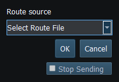

A route is an ordered set of geographic waypoints, not a command to move the vessel. RayNmeaSimulator can import a route file, receive complete chartplotter routes, explicitly retrieve a supported chartplotter route and export a selected validated snapshot. Vessel Movement's existing Autopilot consumes the selected route only on explicit activation.
| Task | Use |
|---|---|
| Offline exchange with a charting application | Export one route from that application as GPX; Select Route File here |
| Export the selected simulator route | Export Route… to GPX or KML |
| Use an already received complete route | Select Chartplotter Route; no active request is needed for that snapshot |
| Fetch an Axiom route catalogue/waypoints | Supported bidirectional transport and separate bounded route-service authorization |
Cancelled or failed imports/retrievals retain the previous selection and running route. A new selection made while following a route is pending for the next Autopilot activation. Selecting or exporting a route does not enable Sending.
Received source NAME/address/database identity and sparse waypoint IDs are protocol metadata. A file export preserves the route's ordered geometry and names, not every NMEA2000 service identity. GPX interchange is useful independently of active NMEA2000 database service support.

Figure 75. Choose Select Route File or Select Chartplotter Route; the chooser does not activate navigation. Click to enlarge.
GPX/KML Import · GPX/KML Export · Selecting Chartplotter Routes · Route Requests and Authorization · Navigation Measurements · Connection Troubleshooting · Enable, Dispatch and Sending · Engineering Units